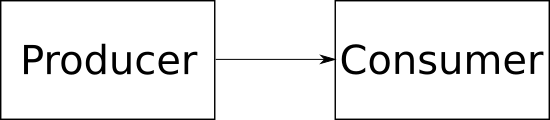

Traditional method calling.
We have a consumer that wants structured data.
type Consumer struct {
// internal fields, doesn't matter here
}
type Data struct {
// some useful data types
}
// This function has a receiver, the (*Consumer) bit, that
// makes it a method on Consumer.
func (*Consumer) Notify(data Data) {
// do stuff with data
}
The producer, that creates the data,
has a reference to a consumer.
type Producer struct {
// This is a pointer to a Consumer structure.
consumer *Consumer
}
func NewProducer(consumer *Consumer) *Producer {
// & takes the address of the thing. This is how
// Go gets pointers to things. The {...} is a struct
// initialiser.
return &Producer{consumer}
}
The producer calls the method directly on the consumer.
// This receiver as a name "p", and is used to access
// the elements of the Producer struct. It is the "Go"
// way to generally use a single character for this,
// and not use words like "this" or "self".
func (p *Producer) Call() {
data := Data{...}
// do stuff
p.consumer.Notify(data)
}
Step one is to use an interface.
Instead of taking a concerte type, the Consumer interface is declared with the Producer.
// An interface is just a collection of methods.
type Consumer interface {
Notify(data Data)
}
type Producer struct {
consumer Consumer
}
// Any type that implements the Notify method
// can be passed as the Consumer.
func NewProducer(consumer Consumer) *Producer {
return &Producer{consumer}
}
Any structure that implements the methods defined by the Consumer interface can now be passed to the NewProducer function.
type MyConsumer struct {
// internal fields, doesn't matter here
}
// Notify implements the Consumer insterface.
func (*MyConsumer) Notify(data Data) {
// do stuff with data
}
// in some function...
consumer := &MyConsumer{...}
producer := NewProducer(consumer)
The producer still calls the method directly on the consumer.
// This isn't a trick, it hasn't changed.
func (p *Producer) Call() {
data := Data{...}
// do stuff
p.consumer.Notify(data)
}
Now the Producer has a slice of consumers.
type Producer struct {
// consumers is now a slice
consumers []Consumer
}
func (p *Producer) AddConsumer(consumer Consumer) {
p.consumers = append(p.consumers, consumer)
}
Iterating over the consumers calling each one.
func (p *Producer) Call() {
data := Data{...}
// do stuff
// when iterating over a slice the first element
// is the index into the slice, and the second
// is the value in the slice, we don't care about
// the index here so we assign it to the "special"
// variable _.
for _, consumer := range p.consumers {
consumer.Notify(data)
}
}
type Hub struct {
// the hub stores the consumers
consumers []Consumer
}
func (h *Hub) AddConsumer(consumer Consumer) {
h.consumers = append(h.consumers, consumer)
}
// Calling Notify on the hub just calls Notify
// on all the consumers.
func (h *Hub) Notify(data Data) {
for _, consumer := range h.consumers {
consumer.Notify(data)
}
}
// We could use the concrete type Hub, but Hub
// implements the Consumer interface.
type Producer struct {
consumer Consumer
}
func NewProducer(consumer Consumer) *Producer {
return &Producer{consumer}
}
func (p *Producer) Call() {
data := Data{...}
// do stuff
p.consumer.Notify(data)
}
Use a name for an event, let's call them topics.
type Topic string
func (h *Hub) Publish(topic Topic, ...) {
// implementation
}
func (h *Hub) Subscribe(topic Topic, ...) {
// implementation
}
The interface{} type can be anything.
// Publish a topic with some data.
func (h *Hub) Publish(topic Topic, data interface{}) {
// implementation
}
// Subscribe to a topic, and provide the callback that
// gets told the topic and the data.
func (h *Hub) Subscribe(topic Topic, func (Topic, interface{})) {
// implementation
}
type subscriber struct {
topic Topic
callback func(Topic, interface{})
}
type Hub struct {
mutex sync.Mutex
subscribers []*subscriber
}
func (h *Hub) Subscribe(topic Topic, callback func (Topic, interface{})) {
h.mutex.Lock()
// The "defer" keyword queues up the function to be called at the
// end of the function. Multiple defer calls work LIFO.
defer h.mutex.Unlock()
h.subscribers = append(h.subscribers, &subscriber{topic, callback})
}
func (h *Hub) Publish(topic Topic, data interface{}) {
h.mutex.Lock()
defer h.mutex.Unlock()
for _, subscriber := range h.subscribers {
if subscriber.topic == topic {
// The "go" key word calls the function in
// a different goroutine.
go subscriber.callback(topic, data)
}
}
}
Have the Subscribe function return something that can be used to unsubscribe.
type Unsubscriber interface {
Unsubscribe()
}
func (h *Hub) Subscribe(...) Unsubscriber {
// implementation
}
Each subscription has a unique identifier.
type subscriber struct {
id int
topic Topic
callback func(Topic, interface{})
}
type Hub struct {
mutex sync.Mutex
index int
subscribers []*subscriber
}
func (h *Hub) unsubscribe(id int) {
h.mutex.Lock()
defer h.mutex.Unlock()
for i, sub := range h.subscribers {
if sub.id == id {
h.subscribers = append(
h.subscribers[0:i],
h.subscribers[i+1:]...)
return
}
}
}
type handle struct {
hub *Hub
id int
}
// Unsubscribe implements Unsubscriber.
func (h *handle) Unsubscribe() {
h.hub.unsubscribe(h.id)
}
Each subscription has a unique identifier.
func (h *Hub) Subscribe(topic Topic,
callback func (Topic, interface{})) Unsubscriber {
h.mutex.Lock()
defer h.mutex.Unlock()
h.index++
h.subscribers = append(h.subscribers, &subscriber{
id: h.index, topic: topic, callback: callback})
return &handle{hub: h, id: h.index}
}
func (*Suite) TestPublishOneSubscriber(c *gc.C) {
var called bool
var topic pubsub.Topic = "test topic"
hub := pubsub.NewHub()
hub.Subscribe(topic, func(call pubsub.Topic, data interface{}) {
c.Check(call, gc.Equals, topic)
c.Check(data, gc.IsNil)
called = true
})
hub.Publish(topic, nil)
// How long do we wait, how do we know it was called?
c.Assert(called, jc.IsTrue)
}
Go channels are used for signalling.
func waitForMessageHandlingToBeComplete(c *gc.C, done <-chan struct{}) {
select {
case <-done:
case <-time.After(time.Second):
// We expect message handling to be done in under 1ms
// so waiting for a second is 1000x as long.
c.Fatal("publish did not complete")
}
}
func (h *Hub) Publish(topic Topic, data interface{}) <-chan struct{} {
h.mutex.Lock()
defer h.mutex.Unlock()
done := make(chan struct{})
wait := sync.WaitGroup{}
for _, subscriber := range h.subscribers {
if subscriber.topic == topic {
wait.Add(1)
go func(){
defer wait.Done()
subscriber.callback(topic, data)
}
}
}
go func() {
wait.Wait()
close(done)
}()
return done
}
func (*Suite) TestPublishOneSubscriber(c *gc.C) {
var called bool
var topic pubsub.Topic = "test topic"
hub := pubsub.NewHub()
hub.Subscribe(topic, func(call pubsub.Topic, data interface{}) {
c.Check(call, gc.Equals, topic)
c.Check(data, gc.IsNil)
called = true
})
done := hub.Publish(topic, nil)
waitForMessageHandlingToBeComplete(c, done)
c.Assert(called, jc.IsTrue)
}
If multiple calls to Publish are made that match a subscriber, what order does the subscriber get told about the events?
It depends
type subscriber struct {
id int
topic Topic
handler func(topic Topic, data interface{})
mutex sync.Mutex
pending *deque.Deque
closed chan struct{}
data chan struct{}
done chan struct{}
}
func newSubscriber(topic Topic, handler func(Topic, interface{}))
*subscriber {
// A closed channel is used to provide an immediate
// route through a select call in the loop function.
closed := make(chan struct{})
close(closed)
sub := &subscriber{
topic: topic,
handler: handler,
pending: deque.New(),
data: make(chan struct{}, 1),
done: make(chan struct{}),
closed: closed,
}
go sub.loop()
return sub
}
type handlerCallback struct {
topic Topic
data interface{}
wg *sync.WaitGroup
}
func (h *handlerCallback) done() {
h.wg.Done()
}
func (s *subscriber) notify(call *handlerCallback) {
s.mutex.Lock()
defer s.mutex.Unlock()
s.pending.PushBack(call)
if s.pending.Len() == 1 {
s.data <- struct{}{}
}
}
func (s *subscriber) popOne() (*handlerCallback, bool) {
s.mutex.Lock()
defer s.mutex.Unlock()
val, ok := s.pending.PopFront()
if !ok {
// nothing to do
return nil, true
}
empty := s.pending.Len() == 0
return val.(*handlerCallback), empty
}
func (s *subscriber) loop() {
var next <-chan struct{}
for {
select {
case <-s.done:
return
case <-s.data:
// Has new data been pushed on?
case <-next:
// If there was already data, next is a closed channel.
// otherwise it is nil so won't pass through.
}
call, empty := s.popOne()
if empty {
next = nil
} else {
next = s.closed
}
// call *should* never be nil as we should only be calling
// popOne in the situations where there is actually
// something to pop.
if call != nil {
s.handler(call.topic, call.data)
call.done()
}
}
}
func (s *subscriber) close() {
s.mutex.Lock()
defer s.mutex.Unlock()
// Need to iterate through all the pending calls and make
// sure the wait group is decremented.
for call, ok := s.pending.PopFront(); ok;
call, ok = s.pending.PopFront() {
call.(*handlerCallback).done()
}
close(s.done)
}
func (h *Hub) unsubscribe(id int) {
h.mutex.Lock()
defer h.mutex.Unlock()
for i, sub := range h.subscribers {
if sub.id == id {
sub.close()
h.subscribers = append(
h.subscribers[0:i],
h.subscribers[i+1:]...)
return
}
}
}
The SimpleHub
Now what?
How about not having callbacks with interface{}?
Better topic matching?
Hander functions for a structured hub can get all the published data available by defining a callback with the signature:
func (Topic, map[string]interface{})
Or alternatively, define a struct type, and use that type as the second argument.
func (Topic, SomeStruct, error)
Uses the simple hub, and wraps all callbacks so the data interface{}
used for the simple hub publish method is always given a map[string]interface{}
Converting the data value can now generate an error.
func (h *StructuredHub) Publish(topic Topic, data interface{})
(<-chan struct{}, error) {
// convert data to map[string]interface{}
// call the simple hub Publish with the map
}
// Marshaller defines the Marshal and Unmarshal methods used to
// serialize and deserialize the structures used in Publish and
// Subscription handlers of the structured hub.
type Marshaller interface {
// Marshal converts the argument into a byte streem that it
// can then Unmarshal.
Marshal(interface{}) ([]byte, error)
// Unmarshal attempts to convert the byte stream into type
// passed in as the second arg.
Unmarshal([]byte, interface{}) error
}
import "encoding/json"
// JSONMarshaller simply wraps the json.Marshal and json.Unmarshal
// calls for the Marshaller interface.
var JSONMarshaller = &jsonMarshaller{}
type jsonMarshaller struct{}
func (*jsonMarshaller) Marshal(v interface{}) ([]byte, error) {
return json.Marshal(v)
}
func (*jsonMarshaller) Unmarshal(data []byte, v interface{}) error {
return json.Unmarshal(data, v)
}
type Emitter struct {
Origin string `json:"origin"`
Message string `json:"message"`
ID int `json:"id"`
}
value := Emitter{"master", "hello world", 42}
// JSON Marshalling
`{"origin":"master","message":"hello world","id":42}`
// Unmarshalled into map[string]interface{} gives
map[string]interface{}{
"origin": "master",
"message": "hello world",
"id": 42,
}
func (h *StructuredHub) toStringMap(data interface{})
(map[string]interface{}, error) {
if cast, ok := data.(map[string]interface{}); ok {
return cast, nil
}
var result map[string]interface{}
// convert to a map by marshalling the structure
// out and back into a map
bytes, err := h.marshaller.Marshal(data)
if err != nil {
return nil, errors.Annotate(err, "marshalling")
}
err = h.marshaller.Unmarshal(bytes, &result)
if err != nil {
return nil, errors.Annotate(err, "unmarshalling")
}
return result, nil
}
Subscribing can now also generate an error if the handler function doesn't match the expected signatures.
func (h *StructuredHub) Subscribe(topic Topic, handler interface{})
(Unsubscriber, error) {
// reflection to interrogate the handler to make
// sure it is a function that matches either
// `func(Topic, map[string]interface{})`
// or
// `func(Topic, SomeStruct, error)`
}
Originally I started with regular expressions.
// Topic represents a message that can be subscribed to.
type Topic string
// TopicMatcher defines the Match method that is used to determine
// if the subscriber should be notified about a particular message.
type TopicMatcher interface {
Match(Topic) bool
}
// Match implements TopicMatcher. One topic matches another if they
// are equal.
func (t Topic) Match(topic Topic) bool {
return t == topic
}
// RegexpMatcher allows standard regular expressions to be used as
// TopicMatcher values.
type RegexpMatcher regexp.Regexp
// MatchRegexp expects a valid regular expression. If the expression
// passed in is not valid, the function panics. The expected use of this
// is to be able to do something like:
// `hub.Subscribe(pubsub.MatchRegex("prefix.*suffix"), handler)`
func MatchRegexp(expression string) TopicMatcher {
return (*RegexpMatcher)(regexp.MustCompile(expression))
}
// The topic matches if the regular expression matches the topic.
func (m *RegexpMatcher) Match(topic Topic) bool {
r := (*regexp.Regexp)(m)
return r.MatchString(string(topic))
}
During initial use, I found that I wanted to be able to match every topic.
type allMatcher struct{}
// Match implements TopicMatcher. All topics match for the allMatcher.
func (*allMatcher) Match(topic Topic) bool {
return true
}
// MatchAll is a topic matcher that matches all topics.
var MatchAll TopicMatcher = (*allMatcher)(nil)
BTW talk is on github